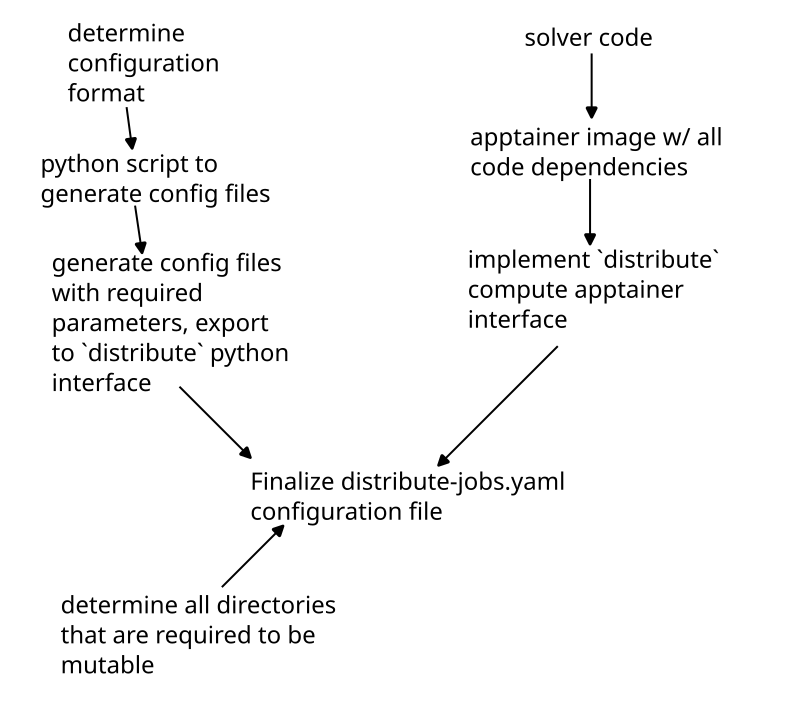

Apptainer
Apptainer (previously named Singularity) is a container system often used for packaging HPC applications. For us,
apptainer is useful for distributing your compute jobs since you can specify the exact dependencies required
for running. If your container runs on your machine, it will run on the distributed cluster!
As mentioned in the introduction, you must ensure that your container does not write to any directories that are not bound by the host system. This will be discussed further below, but suffice it to say that writing to apptainer's immutable filesystem will crash your compute job.
Versus Docker
There is an official documentation page discussing the differences between docker
and apptainer here. There a few primary
benefits for using apptainer from an implementation standpoint in distribute:
- Its easy to use GPU compute from apptainer
- Apptainer compiles down to a single
.siffile that can easily be sent to thedistributeserver and passed to compute nodes - Once your code has been packaged in apptainer, it is very easy to run it on paid HPC clusters
Overview of Apptainer configuration files

Apptainer definition files
This documentation is not the place to discuss the intricacies of apptainer. As a user, we have tried to make
it as easy as possible to build an image that can run on distribute.
The apptainer-common was purpose built to give you a good
starting place with compilers and runtimes (including fortran, C++, openfoam, python3). Your definition file
needs to look something like this:
Bootstrap: library
From: library://vanillabrooks/default/fluid-dynamics-common
%files from build
# in here you copy files / directories from your host machine into the
# container so that they may be accessed and compiled.
# the sintax is:
/path/to/host/file /path/to/container/file
%post
# install any extra packages required here
# possibly with apt, or maybe pip3
%apprun distribute
# execute your solver here
# this section is called from a compute node
A (simplified) example of a definition file I have used is this:
Bootstrap: library
From: library://vanillabrooks/default/fluid-dynamics-common
%files
# copy over my files
/home/brooks/github/hit3d/ /hit3d
/home/brooks/github/hit3d-utils/ /hit3d-utils
/home/brooks/github/vtk/ /vtk
/home/brooks/github/vtk-analysis/ /vtk-analysis
/home/brooks/github/fourier/ /fourier
/home/brooks/github/ndarray-gradient/ /ndarray-gradient
/home/brooks/github/matrix-notify/ /matrix-notify
/home/brooks/github/distribute/ /distribute
%environment
CARGO_TARGET_DIR="/target"
%post
# add cargo to the environment
export PATH="$PATH":"$HOME/.cargo/bin"
cd /hit3d-utils
cargo install --path .
ls -al /hit3d-utils
cd /hit3d/src
make
cd /vtk-analysis
cargo install --path .
# move the binaries we just installed to the root
mv $HOME/.cargo/bin/hit3d-utils /hit3d/src
mv $HOME/.cargo/bin/vtk-analysis /hit3d/src
#
# remove directories that just take up space
#
rm -rf /hit3d/.git
rm -rf /hit3d/target/
rm -rf /hit3d/src/output/
rm -rf /hit3d-utils/.git
rm -rf /hit3d-utils/target/
#
# simplify some directories
#
mv /hit3d/src/hit3d.x /hit3d.x
# copy the binaries to the root
mv /hit3d/src/vtk-analysis /vtk-analysis-exe
mv /hit3d/src/hit3d-utils /hit3d-utils-exe
mv /hit3d-utils/plots /plots
mv /hit3d-utils/generic_run.py /run.py
%apprun distribute
cd /
python3 /run.py $1
I want to emphasize one specific thing from this file: the %apprun distribute section is very important. On a node
with 16 cores, your distribute section gets called like this:
apptainer run --app distribute 16
In reality, this call is actually slightly more complex (see below), but this command is illustrative of the point. You must ensure you pass the number of allowed cores down to whatever run script you are using. In our example:
%apprun distribute
cd /
python3 /run.py $1
We make sure to pass down the 16 we received with $1 which corresponds to "the first argument that this bash script was
called with". Similar to the python configuration, your python file is also responsible for parsing this value and running
your solver with the appropriate number of cores. You can parse the $1 value you pass to python using the sys.argv value
in your script:
import sys
allowed_processors = sys.argv[1]
allowed_processors_int = int(allowed_processors)
assert(allowed_processors_int, 16)
You must ensure that you use all available cores on the machine. If your code can only use a reduced number
of cores, make sure you specify this in your capabilities section! Do not run single threaded
processes on the distributed computing network - they will not go faster.
Full documentation on apptainer definition files can be found on the official site. If you are building an apptainer image based on nvidia HPC resources, your header would look something like this (nvidia documentation):
Bootstrap: docker
From: nvcr.io/nvidia/nvhpc:22.1-devel-cuda_multi-ubuntu20.05
Building Apptainer Images
Compiling an apptainer definition file to a .sif file to run on the distribute compute is relatively simple (on linux). Run something like this:
mkdir ~/apptainer
APPTAINER_TMPDIR="~/apptainer" sudo -E apptainer build your-output-file.sif build.apptainer
where your-output-file.sif is the desired name of the .sif file that apptainer will spit out, and build.apptainer is the
definition file you have built. The APPTAINER_TMPDIR="~/apptainer" portion of the command sets the APPTAINER_TMPDIR environment
variable to a location on disk (~/apptainer) because apptainer / apptainer can often require more memory to compile the sif file
than what is available on your computer (yes, more than your 64 GB). Since apptainer build requires root privileges, it must be run with sudo. The additional
-E passed to sudo copies the environment variables from the host shell (which is needed for APPTAINER_TMPDIR)
Binding Volumes (Mutable Filesystems)
In order for your compute job to do meaningful work, you will likely save some files. But we know that apptainer image files are not mutable. The answer to this problem is binding volumes. A "volume" is container-language for a folder inside the container that actually corresponds to a folder on the host system. Since these special folders ("volumes") are actually part of the host computer's filesystem they can be written to without error. The process of mapping a folder in your container to a folder on the host system is called "binding".
With apptainer, the binding of volumes to a container happens at runtime. Since distribute wants you to have
access to a folder to save things to (in python: ./distribute_save), as well as a folder to read the required_files
you specified (in python: ./distribute_save). Apptainer makes these folders slightly easier to access by binding them
to the root directory: /distribute_save and /input. When running your apptainer on the compute node with 16
cores, the following command is used to ensure that these bindings happen:
apptainer run apptainer_file.sif --app distribute --bind \
path/to/a/folder:/distribute_save:rw,\
path/to/another/folder:/input:rw\
16
Note that the binding arguments are simply a comma separated list in the format folder_on_host:folder_in_container:rw
where rw specifies that files in the folder are readable and writeable.
If your configuration file for apptainer looks like this:
meta:
batch_name: your_jobset_name
namespace: example_namespace
capabilities: []
apptainer:
initialize:
sif: execute_container.sif
required_files:
- path: file1.txt
- path: file999.txt
alias: file2.txt
required_mounts: []
jobs:
- name: job_1
required_files:
- path: file3.txt
- name: job_2
required_files: []
When running job_1, the /input folder looks like this:
input
├── file1.txt
├── file2.txt
└── file3.txt
And when running job_2, the /input folder looks like this:
input
├── file1.txt
├── file2.txt
For a more detailed explanation of this behavior read the python configuration documentation.
Now a natural question you may have is this: If volume bindings are specified at runtime - and not
within my apptainer definition file - how can I possibly get additional mutable folders? Am I stuck
with writing to /input and /distribute_save? The answer is no! You can tell distribute what folders
in your container you want to be mutable with the required_mounts key in the initialize section of
your configuration. For example, in the hit3d solver (whose definition file is used as the example
above), the following folder structure at / would be present at runtime:
.
├── distribute_save
├── hit3d-utils-exe
├── hit3d.x
├── input
├── plots
│ ├── energy_helicity.py
│ ├── proposal_plots.py
│ └── viscous_dissapation.py
└── vtk-analysis-exe
However, hit3d requires a folder called output relative to itself. Since this folder is required,
we might be (naively) tempted to simply add a call to mkdir /output in our %post section of the
definition file. However, we would then be creating an immutable directory within the image. Instead,
we simply just need to add this path to our configuration file:
meta:
batch_name: your_jobset_name
namespace: example_namespace
capabilities: []
apptainer:
initialize:
sif: execute_container.sif
required_files:
- path: file1.txt
- path: file999.txt
alias: file2.txt
required_mounts:
- /output # <---- here
jobs:
- name: job_1
required_files:
- path: file3.txt
- name: job_2
required_files: []
By adding this line, your container will be invoked like this (on a 16 core machine):
apptainer run apptainer_file.sif --app distribute --bind \
path/to/a/folder:/distribute_save:rw,\
path/to/another/folder:/input:rw,\
path/to/yet/another/folder/:/output:rw\
16
Configuration File
A default configuration file can be generated with :
distribute template apptainer
---
meta:
batch_name: your_jobset_name
namespace: example_namespace
matrix: ~
capabilities:
- gfortran
- python3
- apptainer
apptainer:
initialize:
sif: execute_container.sif
required_files:
- path: /file/always/present/1.txt
alias: optional_alias.txt
- path: /another/file/2.json
alias: ~
- path: /maybe/python/utils_file.py
alias: ~
required_mounts:
- /path/inside/container/to/mount
jobs:
- name: job_1
required_files:
- path: job_configuration_file.json
alias: ~
- path: job_configuration_file_with_alias.json
alias: input.json
The meta section is identical to the meta section of python. For apptainer configurations, the only
capability you need to specify is apptainer or apptainer. If you require your job to use a gpu,
you can also specify a gpu capability.
The initialize section takes in a single .sif file
that is built using the apptainer build command on a definition file, as well as some files that you always want
to be available in the /input directory. Then, the required_mounts provides a way to bind mutable directories
to the inside of the container. Make sure that the directory you are binding to does not actually exist in the container
(but its parent directory does exist).
The job section is also very similar to the python configuration, but instead of taking python scripts and some files
that should be present on the system, it exclusively takes required_files that should be present. This is discussed
more in the next section.
Workflow Differences From Python
The largest difference you will encounter between the apptainer and python configurations is the way in
which they are executed. While each python job has its own file that it may use for execution, the apptainer
workflow simply relies on whatever occurs in %apprun distribute to read files from /input and execute the
binary directly. Therefore, each job in the configuration file only operates on some additional input files
and the .sif file never changes. This is slightly less flexible than the python configuration (which allows
for individual python files to run each job), but by storing your input files in some intermediate structure
(like json) this difficulty can be easily overcome.
Debugging Apptainer Jobs / Example
Because there are a lot of ways that your job might go wrong, you can use the distribute run command
to run an apptainer configuration file in place. As an example, take this test
that is required to compile and run in the project. The apptainer definition file is:
Bootstrap: library
From: ubuntu:20.04
%files
./run.py /run.py
%post
apt-get update -y
apt install python3 -y
%apprun distribute
cd /
python3 /run.py $1
run.py is:
import sys
def main():
procs = int(sys.argv[1])
print(f"running with {procs} processors")
print("writing to /dir1")
with open("/dir1/file1.txt", "w") as f:
f.write("checking mutability of file system")
print("writing to /dir2")
with open("/dir2/file2.txt", "w") as f:
f.write("checking mutability of file system")
# read some input files from /input
print("reading input files")
with open("/input/input.txt", "r") as f:
text = f.read()
num = int(text)
with open("/distribute_save/simulated_output.txt", "w") as f:
square = num * num
f.write(f"the square of the input was {square}")
if __name__ == "__main__":
main()
input_1.txt is:
10
input_2.txt is:
15
and distribute-jobs.yaml is:
---
meta:
batch_name: some_batch
namespace: some_namespace
capabilities: []
apptainer:
initialize:
sif: apptainer_local.sif
required_files: []
required_mounts:
- /dir1
- /dir2
jobs:
- name: job_1
required_files:
- path: input_1.txt
alias: input.txt
- name: job_2
required_files:
- path: input_2.txt
alias: input.txt
the apptainer definition file can be built with these instructions. Then, execute the job locally:
distribute run distribute-jobs.yaml --save-dir output --clean-save
The output directory structure looks like this:
output
├── archived_files
│ ├── job_1
│ │ ├── job_1_output.txt
│ │ └── simulated_output.txt
│ └── job_2
│ ├── job_2_output.txt
│ └── simulated_output.txt
├── _bind_path_0
│ └── file1.txt
├── _bind_path_1
│ └── file2.txt
├── distribute_save
├── initial_files
├── input
│ └── input.txt
└── apptainer_file.sif
This shows that we were able to write to additional folders on the host system (_bind_path_x), as well as read and write output files. Its worth noting that
if this job was run on the distributed server, it would not be archived the same (archive_files directory is simply a way to save distribute_save without
deleting data). The structure on the server would look like this:
some_namespace
├── some_batch
├── job_1
│ ├── job_1_output.txt
│ └── simulated_output.txt
└── job_2
├── job_2_output.txt
└── simulated_output.txt
The outputs of the two simulated_output.txt files are:
the square of the input was 100
and
the square of the input was 225